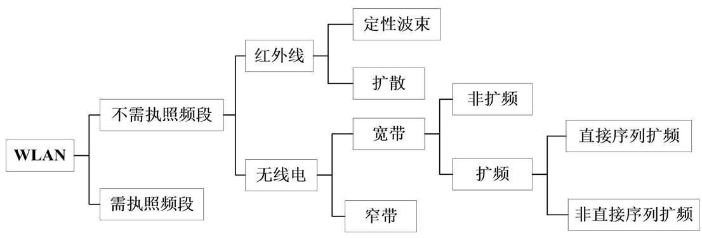
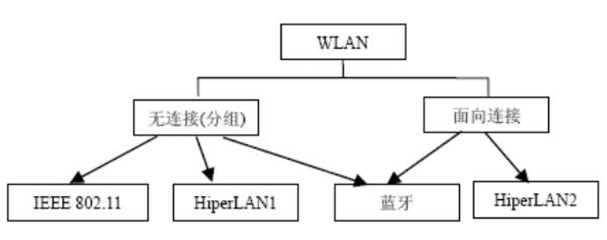
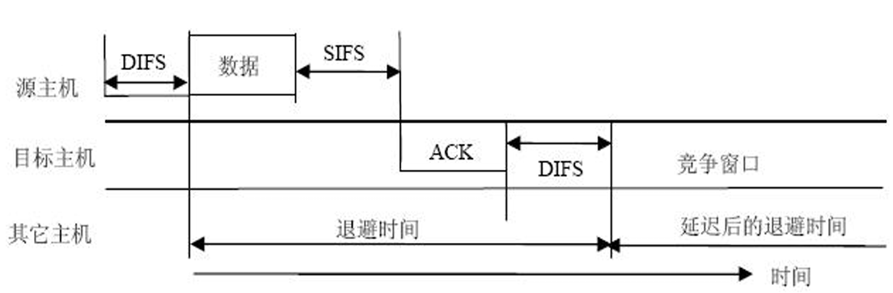

无线局域网 (WLAN)
无线局域网（WLAN）在受限地理区域内实现了高效的无线连接。物理层的不可变性决定了上层协议设计的逻辑边界。
无线局域网概述与战略定位
WLAN 的本质是利用无线介质实现终端主机的互联。通常指采用无线传输介质的计算机局域网
它将计算机网络的“资源共享”属性与无线通信的“移动便捷”属性相结合。
WLAN 的优劣势对比分析：
| 特性维度 | 表现 (优点/局限性) | 物理逻辑简析 |
|---|---|---|
| 移动性与灵活性 | 极高（摆脱物理束缚） | 电磁波在自由空间传播，无需布线。 |
| 可伸缩性 | 极佳（部署成本低） | 增加 AP 即可扩展覆盖，无需破坏建筑结构。 |
| 可靠性 | 较低（易丢包、波动大） | 无线环境开放，受干扰、多径衰落影响严重。 |
| 安全性 | 脆弱（易被窃听） | 信号呈球形广播，无精确物理边界。 |
| 系统容量 | 受限（带宽共享） | 信道具有排他性，用户增多导致信噪比与吞吐量下降。 |
无线局域网（WLAN）的两种核心分类方式：按频段分类和按业务类型分类，以及按网络拓扑和应用要求
按频段（及传输技术）：需执照频段 (Licensed)和不需执照频段 (Unlicensed)：即我们前面学过的 ISM免费频段（如2.4GHz、5GHz）

基于网络层和数据链路层的通信逻辑，决定了网络是更适合传“普通数据”还是“音视频流”
无连接 / 分组不需要事先建立端到端的专有连接，数据被切分成一个个“分组（包）”独立发送，尽力而为。
面向连接发送数据前，必须先在收发双方之间建立一条逻辑上的“专有通道”。

根据网络拓扑和应用要求，分为对等、基础架构、 接入、中继等
WLAN应用分室内和室外两类；或者三种应用目的： 接入，网络无线互联，定位
WLAN 组成要素与拓扑架构，核心服务
- 核心组件： 站 (STA)、无线接入点 (AP)、分布式系统 (DS)、无线介质 (WM)。
- STA即终端，AP则是基站
此外覆盖区域范围称服务区(SA)，移动站无线收发信机及地理环境确定的通信覆盖区域称基本服务区 (BSA)或小区(Cell)，是网络最小单元。一个BSA 内相互联系、相互通信一组主机组成基本服务集 (BSS)。
服务集架构对比：
| 架构类型 | 定义与逻辑关系 |
|---|---|
| 基本服务集 (BSS) | 网络最小单元，由一个 AP 及其覆盖范围内的 STA 组成，拥有唯一 BSSID。 |
| 扩展服务集 (ESS) | 通过 DS 互连的多个 BSS 组成，逻辑上属于同一个 ESA，范围可达数千米。 |
BSSID 与 SSID：SSID 是无线网络的逻辑名称，BSSID 用于在底层区分不同的 AP 实体；同一重叠区域内不能出现同名的独立 AP，否则会引发命名冲突导致网络瘫痪。
拓扑分类：
分布对等式拓扑（Ad-Hoc / IBSS）：典型的“去中心化”，不需要任何 AP 基站，设备与设备之间直接点对点通信
- Ad-hoc 自组网： 去中心化、按需构建。常用于车联网 (V2V) 防碰撞及无网络环境下的工厂机器人协作。
基础架构集中式：以 AP 为中心。所有通信必须由 AP 转接
- 特点： 站点通信须经 源站→AP→目标站 的两跳过程，增加延迟。
- 优缺点： 可管理性与可伸缩性强；但存在单点故障风险（AP 损坏则全网瘫）和两跳时延
WLAN 的两套核心服务（STA 服务与 DS 服务）
STA 服务（管“进门”与“保密”）
认证 (Authentication)：因为无线网没有物理网线，所以必须先验证身份才能连接。保密 (Privacy)：空气介质谁都能监听，所以强制要求采用 WEP、WPA 等加密机制，防止数据被窃听。解除认证 (Deauthentication)：终止连接。
DS 服务 / DSS（管“找人”与“漫游”）
关联 (Association)：一个 STA 接入网络前，必须先“挂靠”到一个特定的 AP 上，DS 根据这个映射表来分发消息。任一瞬间，一个手机只能关联一个 AP。重新关联 (Reassociation)：当您拿着手机从一楼走到二楼（跨越不同 AP 的覆盖区）时，触发的“漫游切换”过程。分布 (Distribution) 与 集成 (Integration)：负责在庞大的 ESS 内部找人，或者将无线数据转换发送到外网的有线局域网（集成）中。
IEEE 802.11MAC层
提供可靠数据传输。MAC帧交换协议保障无线 介质上的数据传输可靠性。
共享介质访问的公平控制，通过两种访问机来实现：
- 基本访问机制，即分布式协调功能 (DCF)；
- 集中控制访问机制，即点协调功能 (PCF)。
安全服务具体使用WEP等保护数据传输。
DCF（分布式协调）
- DCF是基础协议，核心是载波监听多路访问/冲突避免 (CSMA/CA)，包括载波检测、帧间间隔和随机退避。
- 自组织网和基础架构网中超帧的竞争期使用，支持异步服务
- 每个节点使用CSMA分布接入算法，各站竞争信道使用。
为避免冲突，MAC子层规定所有站完成发送后必须等待一个短时间(继续监听)才能发送下一帧，该时间称为帧间间隔(InterFrame Space，IFS)。
DCF有两种工作模式：CSMA/CA和RTS/CTS
IEEE 802.11：4种IFS
用“等待时间”划分特权 —— 四大帧间间隔：为了避免冲突，系统规定：信道一旦空闲，谁都不能立刻抢，必须先等一小段时间 (IFS)。在这个机制里有一个铁律：等待的时间越短，你的优先级就越高！
四种 IFS 的时间长度关系为：SIFS < PIFS < DIFS < EIFS。
- SIFS (短 IFS - 最优先)：时间最短，特权最高。它专门留给不能被打断的紧急通信，比如接收方回复
ACK 确认帧、或者CTS 清除发送帧。因为等得极短，别人还没反应过来它就发出去了，成功防止被“插队”。 - PIFS (PCF IFS - 次优先)：等于 SIFS + 1个时隙。这是专门给 AP（路由器）在 PCF（无竞争轮询）模式下使用的。这保证了中心路由器总是比普通手机/电脑能更快抢到信道。
- DIFS (DCF IFS - 普通优先级)：等于 SIFS + 2个时隙。这是普通设备在正常发送普通数据报文时，必须熬过的基础等待时间。
- EIFS (扩展 IFS - 惩罚期)：时间最长。如果设备刚才收到了一个出错的烂帧，它就会被关“小黑屋”，必须等待最长的 EIFS 时间才能发下一帧。这既是惩罚，也是为了给网络重新同步留出时间。
CSMA/CA 工作全流程
普通终端（手机、电脑）在 DCF 模式下发数据的标准流程
- 听信道 (载波侦听)：发包前必须先“听”信道是否干净，确认没人说话。通过虚拟载波侦听(VCS)读取别人报头里的“占用时间”字段NAV，而物理载波侦听(PCS) 即检测电磁信号强度
- 等 DIFS：信道空闲后，普通数据必须先老老实实等完一个
DIFS的时间 - 掷骰子 (随机退避)：等完 DIFS 还不能直接发！为了防止几个人同时等完一起发造成严重撞车，每个人必须在竞争窗口（CWmin 到 CWmax）里随机抽一个数字（退避间隔 BI）进行倒数。信道空闲就减1，信道被抢就冻结。谁先倒数到 0，谁就发包，同时一旦开始发送，就必须一口气发完，中途绝不能被打断
- 拿回执 (ACK 确认)：接收方收到数据后，经过极短的
SIFS时间，必须立刻回传一个ACK。因为 SIFS 时间最短，拥有绝对的最高优先级，防止了其他设备在这个间隙插队 - 撞车惩罚 (CW 加倍)：如果在规定时间内没收到 ACK，说明在空中撞车了！此时系统会实施惩罚：让该设备的竞争窗口 (CW) 上限直接翻倍，然后再重新“掷骰子”。窗口变大，抽到大数字的概率增加，从而强行把大家的发送时间错开，减少再次冲突的概率。
一听（PCS/VCS） -> 等一等（DIFS） -> 掷骰子（CW中随机抽BI倒数） -> 发数据 -> 等一瞬（SIFS） -> 拿回执（ACK） -> 没回执就惩罚（CW加倍重传）

RTS/CTS（请求发送/清除发送）预约机制
RTS/CTS 就是专为“运送超大件包裹”和“解决隐藏节点问题”而设计的VIP专属信道预约服务。
第一步：RTS（请求发送，Request to Send）
动作：站 A 在等完 DIFS 且倒数结束后，不直接发真实数据，而是先向站 B 发送一个 RTS 信号，包括持续时间等
第二步：CTS（清除发送，Clear to Send）
动作：站 B 收到 RTS 后，向周围所有节点广播一个 CTS 信号。全体静音（更新NAV计时器进入静止态）
第三步：DATA（数据传输）
动作：A 收到 CTS 后，立刻开始发送真正的长数据报文。由于周围其他站都在“静止态”，所以绝对安全，不会撞车。
第四步：ACK（确认接收）
动作：B 完整接收数据后，向周围广播 ACK 确认帧
RTS与CTS的帧结构小避免大量额外开销
[!note]
RTS/CTS 的适用场景与“阈值”概念（防坑指南）是不是所有通信都要用四次握手？
绝对不是！ 就像您寄一封普通的信（短报文），直接丢进邮筒（普通 CSMA/CA）就行了，不需要专门雇个保安去前面开路（四次握手），否则开路的成本比送信本身还高。
RTS 阈值（Threshold）：在实际的路由器中，会设定一个字节大小的阈值。只有当要发送的数据包长度大于这个阈值（通常是大文件），或者网络中冲突极其严重（隐藏节点多）时，系统才会启动 RTS/CTS 机制。如果是短报文，RTS/CTS 带来的额外开销反而会严重拖慢网速。
DCF 工作全流程
分布式协调功能 (DCF) 解决了无线信道的排他性访问问题：
- 物理载波监听 (CCA)： 侦听电磁场能量，低于阈值（如 -82dBm）则视为空闲。
- 虚拟载波监听 (NAV)： 读取报头中的 Duration 字段并更新 NAV 计时器，期间静默。
- 等待帧间间隔 (IFS)： 空闲后需等待 IFS（如 DIFS/SIFS，不同帧优先级不同）。
- 随机回退 (Backoff)： 从竞争窗口 (CW) 抽取随机数，乘以 Slot Time 开启倒计时。
- 计时器冻结 (Freeze)： 倒计时仅在信道空闲时递减；若被占用，计时器立即冻结，待空闲并过 IFS 后继续。
- 发送与重传： 归零时发送。若未收到 ACK（冲突），则将 CW 窗口上限翻倍（CWmin 至 CWmax），重新开始。
[!tip]
EDCA（增强型分布式信道访问，Enhanced Distributed Channel Access） 是 IEEE 802.11e 标准中专门为了支持 QoS（服务质量） 而对传统 MAC 层协议进行的重要改进
EDCA 的出现就是为了打破DCF绝对公平，给音视频等对时延敏感的业务赋予“VIP 抢占特权”
将数据分为 4 类优先级：音频（Voice）、视频（Video）、尽力而为（普通数据）、背景流（如后台下载）。核心规则非常简单：优先级越高，系统分配给它的等待时延就越小
用 AIFS 代替 DIFS (不等长起跑线)
在 EDCA 中，发包前等待的时间改成了 AIFS（仲裁帧间间隔，Arbitration IFS）。特权体现：AIFS 的值是根据业务类型动态变化的。高优先级业务（如实时多媒体）的 AIFS 值非常小，而低优先级业务的 AIFS 值大
差异化的竞争窗口 CW (作弊骰子)
高优先级业务被分配的起始竞争窗口（CWmin）和最大竞争窗口（CWmax）都要比普通业务小得多,。
点协调功能 (PCF)
DCF（分布式协调）是“大家凭运气掷骰子抢信道”，那么这里的 PCF 就是“由 AP 充当交警，大家排队按名字叫号”
PCF 是一种集中式协调的信道接入机制，它的绝对核心是路由器（AP）
- 建立无争用周期 (CFP)：AP 中的点协调器会周期性地建立一个“无争用周期 (CFP)”。在这个周期内，大家不需要去竞争抢信道，一切由 AP 说了算。
- 利用 NAV静默设备：在 CFP 期间，AP 会向周围所有节点发送信号，强制将所有邻近站点的 NAV（虚拟载波监听闹钟）直接设定为 CFP 的最大期望时长。这就等于强制让所有普通设备进入“静默等待”状态。
- 特权等待时间 (利用 PIFS)： PCF 机制使用的帧间间隔，小于普通设备在 DCF 模式下使用的帧间间隔（即我们上节课学的：PIFS < DIFS）。AP 等待的时间更短，所以能抢先截断普通设备的竞争，夺取信道控制权。
在 AP 控制了信道（进入 CFP 时段）之后就可以点名轮询即挨个轮询各个站点，询问“你有没有数据要发送？”。
站点只有在被 AP “点到名”的时候，才允许把自己的数据发出去，这就从根本上杜绝了数据在空中撞车的情况。
所以存在一些问题：死板的等待机制错过需等待，高延迟，非常不利于时延敏感类型通信
IEEE 802.11 协议标准与演进
微波频段背诵区： 300MHz - 300GHz。对应分米波、厘米波、毫米波。
WiFi 标准演进表：
| 标准编号 | 商业名称 | 工作频段 | 最高理论速率 | 🌟 核心新增技术与特点解析 | | ------------ | ---------- | ------------------- | ------------ | ------------------------------------------------------------ | | 802.11 | - | 2.4 GHz | 2 Mbps | 初代微波和红外线标准，速率极低，奠定基础。 | | 802.11b | WiFi 1 | 2.4 GHz | 11 Mbps | 普及的第一代标准，但 MAC 层参数较大（CWmin=31，Slot=20μs），盲等时间长。 | | 802.11a | WiFi 2 | 5 GHz | 54 Mbps | 转移至无干扰的 5GHz 频段；MAC层参数优化（CWmin=15，Slot=9μs），大幅提升发包效率。 | | 802.11g | WiFi 3 | 2.4 GHz | 54 Mbps | 回归 2.4GHz 频段，引入 OFDM 技术，在拥挤频段实现高速率，向下兼容 802.11b。 | | 802.11n | WiFi 4 | 2.4 / 5 GHz | 600 Mbps | 1. 首次引入 MIMO (多入多出)，利用空间分集成倍提速；
2. 引入 帧聚合 (A-MSDU/A-MPDU)，减少 ACK 确认帧数量，降低开销。 | | 802.11ac | WiFi 5 | 5 GHz | 6.77 Gbps | 1. 160MHz 超大带宽（比11n大3倍）；
2. 256-QAM 调制，每符号传8bit；
3. 引入 下行 MU-MIMO 和 波束赋形 (Beamforming)，可同时定向服务多个终端。 | | 802.11ax | WiFi 6 | 2.4 / 5 GHz | 9.6 Gbps | 1. 引入蜂窝网的 OFDMA，将信道划分为资源单元(RU)，改善密集用户并发体验；
2. 1024-QAM 调制；
3. 上下行 MU-MIMO；
4. BSS颜色机制 降低同频干扰；
5. TWT (目标唤醒时间) 助物联网节能。 | | 802.11be | WiFi 7 | 2.4 / 5 / 6 GHz | 30 Gbps+ | 1. 新辟 6GHz 频段，最大带宽翻倍至 320MHz；
2. 4096-QAM 调制；
3. MLO (多链路操作)，终端可跨频段(如同时连5G+6G)并发收发，极大降时延防冲突；
4. MRU (多资源单元) 与前导穿刺机制，提升抗干扰和频谱利用率。 |重点了解：
| 子标准编号 | 专注领域 | 核心功能与应用场景 | | --------------- | ------------------- | ------------------------------------------------------------ | | 802.11e | QoS (服务质量) | 引入了 EDCA 机制 和 AIFS，为数据流设置优先级，确保音视频多媒体的优先传输。 | | 802.11i | 安全防护 | 针对无线网安全漏洞，弥补了 WEP 的不足，提供增强的安全加密机制。 | | 802.11p | 车联网 (V2X) | WAVE 标准，专门用于车载环境的无线接入，去除了繁琐的握手认证以满足极低时延要求。 | | 802.11s | 网状网络 (Mesh) | 支持无线 Mesh 拓扑，包含拓扑学习、路由转发等，是多 AP 协同覆盖的基础。 | | 802.11ad/ay | 毫米波 (60GHz) | 采用 60GHz 高频，速率可达 7Gbps~20Gbps，但绕射能力极差，仅限单个房间内（5米左右）的高清音视频传输。 | | 802.11ah | 物联网 (IoT) | 采用 低于1GHz 频段，牺牲速率（100kbps）换取 长达 1km 的穿墙覆盖，单 AP 支持上千设备，适合智慧城市。 |
802.11a 为什么比 802.11b 快？
从 MAC 层的参数来解释：
- 802.11b 的参数：起始竞争窗口（CWmin）为 31，时隙（Slot Time）为 20微秒。
- 802.11a 的参数：起始竞争窗口（CWmin）大大缩减为 15，时隙（Slot Time）缩减为 9微秒。
结论：因为 802.11a 抽取的随机数基数更小，且每倒数一步的时间更短，这使得设备发包前的盲等时间大幅减少，倒数更容易快速归零，从而发包效率和整体网速远高于 802.11b。